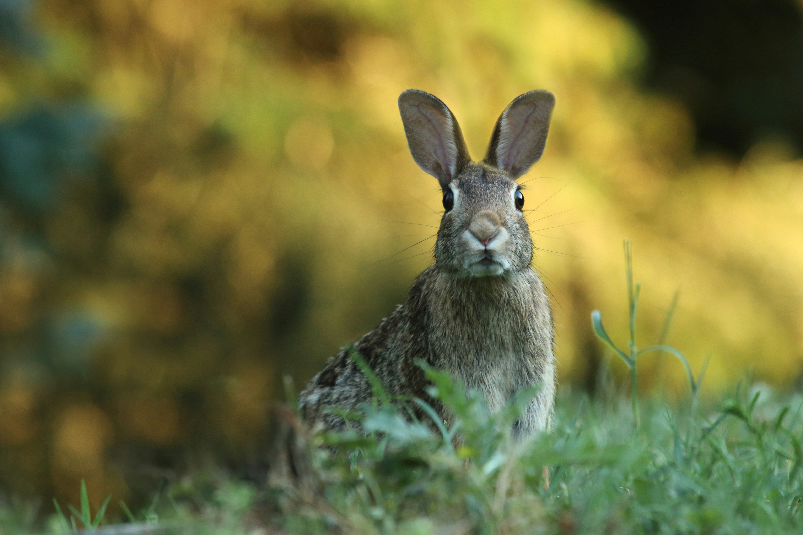

<!DOCTYPE <html>
    <html lang="fr"></html>
    <head>
        <meta charset="UTF-8">
        <meta name="viewport" content="width=device-width, initial-scale=1">
        <title>Tout sur le lapin</title>
    </head>
    <body>
<h1>Tout sur le lapin</h1>
<p>Le lapin est un petit animal aux longues oreilles. On le trouve dans la nature, et beaucoup de familles l'adoptent comme animal de compagnie.</p>

<h2>Son apparence</h2>
<h3>Sa queue</h3>
<p>Le lapin a une petite queue ronde et touffue.</p>

<h3>Ses oreilles</h3>
<p>Ses longues oreilles lui permettent d'entendre les bruits de très loin.</p>

<h3>Son pelage</h3>
<p>Son pelage peut être blanc, gris, brun ou tacheté</p>

<h2>Son alimentation</h2>
<p>Le lapin est un herbivore. Il se nourrit principalement de légumes, de fruits et de pellets spéciaux pour lapins </p>

<h3>Ses aliments préférés</h3>
<ul>
    <li>Les carottes</li>
    <li>Le foin</li>
    <li>Les feuilles de salade</li>
    <li>Le persil</li>
    <li>Le céleri</li>
</ul>
<h2>Une photo de lapin</h2>

    </body>
</html>
